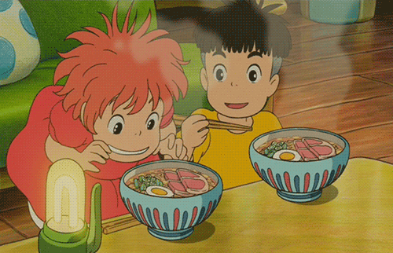

!DOCTYPE html>
reciupe 2
indomie

Description
If you are an anime fan or just want to enjoy a savory flavor, indomie is
an easy and addicting dish
Ingredients
- Two indomie packets
- Filtered water
- one egg
Steps
- Boil some water
- Boil one egg
- Add the indo;ie's spices into the boiling water
- After mixing it, add the noodles
- Cut the egg in half and add it to the coockes noodles